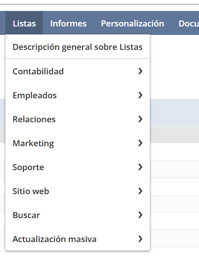
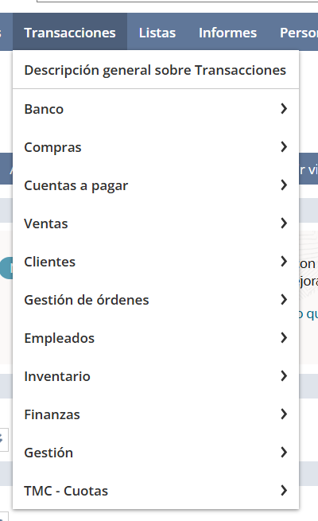
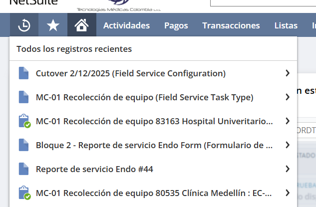
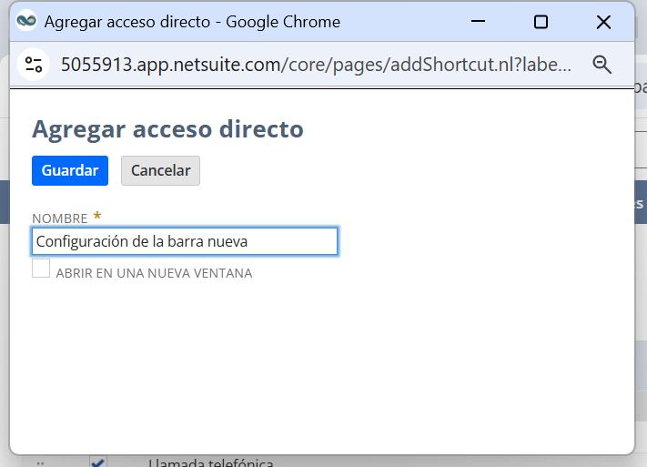
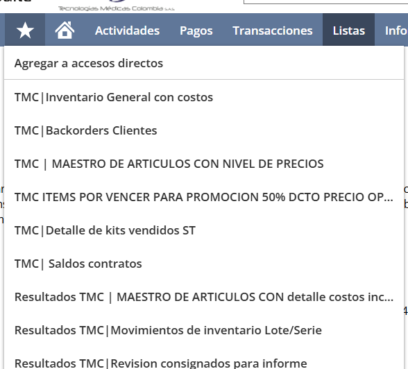
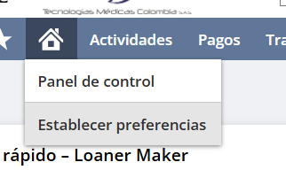
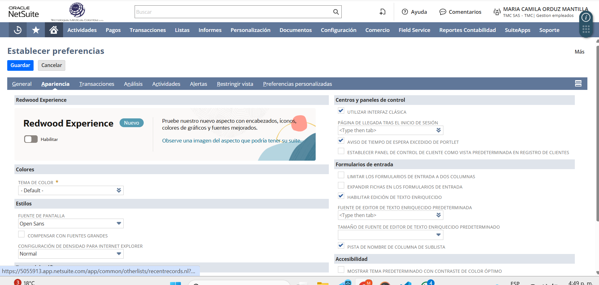

Menús por módulos
NetSuite organiza la navegación por módulos. Cada módulo agrupa opciones relacionadas:
- Transacciones: documentos operativos (órdenes, facturas, pagos, recibos…).
- Listas: catálogos maestros (Clientes, Proveedores, Artículos, Empleados…).
- Informes: reportes estándar y reportes guardados.
- Configuración: opciones administrativas (si el rol lo permite).
Los menús visibles dependen del rol y los permisos del usuario. Por eso, dos personas pueden ver módulos distintos.
Cómo abrir un menú
- Pasa el mouse por encima del módulo (ej.: Listas).
- Se despliega el submenú con opciones agrupadas.
- Haz clic en la opción que necesitas para entrar al formulario o pantalla.

Ejemplo: al pasar por Listas se despliegan opciones como Clientes, Proveedores, Artículos…

Ejemplo (opcional): Transacciones agrupa documentos operativos (ventas, compras, pagos, etc.).
⏱️ Recientes (Reloj)
El reloj muestra lo último que abriste. Útil cuando estás trabajando en varios registros y necesitas volver a uno rápido.

Así se ve Recientes: al abrirlo aparece una lista con accesos a lo que usaste recientemente.
⭐ Favoritos (Estrella) — Accesos directos personales
La estrella guarda accesos directos solo para tu usuario. Muy útil para reportes, búsquedas guardadas y pantallas frecuentes.
Cómo agregar un favorito
- Entra a la pantalla que quieres guardar (por ejemplo, un informe o una búsqueda guardada).
- Pasa el mouse sobre la ⭐ y selecciona “Agregar acceso directo”.
- Escribe un Nombre claro.
- Opcional: marca “Abrir en una nueva ventana”.
- Haz clic en Guardar. Desde ese momento aparecerá al abrir la ⭐.

Agregar acceso directo:
- Nombre: cómo verás el favorito en tu lista.
- Abrir en una nueva ventana: útil para reportes/búsquedas que quieres consultar mientras trabajas en otra pantalla.
- Guardar: queda asociado a tu usuario.

Después de guardar: al abrir la ⭐ verás tu lista de accesos directos.
🏠 Home (Casita) — Home y Preferencias
La casita tiene dos comportamientos:
- Clic: te lleva al Home (dashboard / página principal).
- Hover: despliega opciones rápidas; una de ellas es Establecer preferencias.
En Establecer preferencias → Apariencia puedes cambiar el tema/color.
Esto sirve para diferenciar visualmente Producción vs SANDBOX. El cambio queda guardado solo para tu usuario.

Hover sobre la casita: se despliegan opciones rápidas, incluyendo Establecer preferencias.

Establecer preferencias → Apariencia: aquí puedes ajustar el tema/color (entre otras opciones) para tu usuario.
Guía interna · Tecnologías Médicas Colombia (TMC)